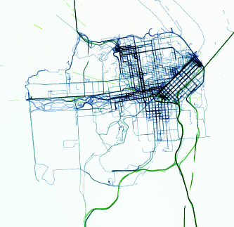

 This is a data visualization application that projects large amounts of high resolution GPS data onto an interactive 4D globe. The data set visualized here is a collection of 1100 personal tracking files recorded on my smart phone over the course of 3+ years with one data point created every 2 seconds. My goal was to explore how my movement patterns change over time and in different environments.
Keep in mind that this application uses a lot of memory to store and visualize the data and it requires a powerful GPU to render it in real time. In other words, it is designed for high-end machines and remember to close this tab when you are done. If you are interested in technical details, you can read about it in my blog.
Follow @xyz_ak